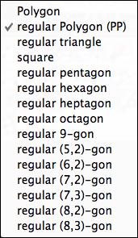

Polygons
In Cinderella.2 various methods are provided to generate regular polygons. They are accessible via the "Polygon" submenu in the "Modes" menu. These modes can be subdivided into two different classes. One class consists of "regular polygon" mode only; the other consists of all the remaining modes in this menu.
 |
| Polygon mode menu |
Regular Polygon
This mode can be used if two points of one edge of a regular polygon are already present. First one clicks on these two points. Then, while the mouse is being dragged, a hint is displayed that indicates the shape of the regular n-gon that will be generated. By adjusting the mouse one can choose whether one wants a triangle, a square, a pentagon, and so forth. Clicking a third time will freeze the position of the polygon, and the vertices and segments for the edges are generated. They are then available in the construction as fully featured geometric elements.
 |  |  |  | ||||
| The two points | Selecting them | Hints while dragging | Situation after the third click |
This mode is also available in hyperbolic geometry, in which case a regular hyperbolic polygon is created. This is a polygon all of whose sides have equal lengths and all of whose angles are equal.
Caution
This mode is currently not supported in spherical geometry. In hyperbolic geometry, in contrast to Euclidean geometry, the angle of an n-gon is not determined by the number n.
Regular Polygons by Center and Vertex
The remaining modes for regular polygons are very similar to "add a circle" mode. They are defined by a press–drag–release sequence. Pressing the mouse creates the center of the polygon, and dragging creates the polygon. Releasing freezes the construction.
For each regular n-gon from n = 3 to n = 9 a specific mode is provided. Furthermore, there exist several modes for regular star polygons. The following picture shows all regular polygons constructible by these kinds of modes.
 |
| A sampler of regular polygons |
This mode is also available for hyperbolic geometry. There another important feature comes into play. A regular n-gon in hyperbolic geometry is a polygon with identical angles at each vertex and with all edges of equal length. In contrast to Euclidean geometry, the number n does not determine the angle. Depending on the size of the polygon, the angle can take any value between 0° and (n – 2)/n ∗ 180°. Thus there exist, for instance, regular pentagons for which all angles are exactly 90°. Four such pentagons fit around a vertex, like squares in Euclidean geometry. Usually it is difficult to construct a polygon of the right size for studying this effect. The regular polygon modes of Cinderella.2 provide a method for generating these polygons in a controlled way. While the mouse is being dragged, snap points are indicated, and a small number is displayed that indicates how many similar polygons fit around a corner.
Page last modified on Thursday 25 of August, 2011 [18:13:09 UTC].
The original document is available at
http://doc.cinderella.de/tiki-index.php?page=Polygons